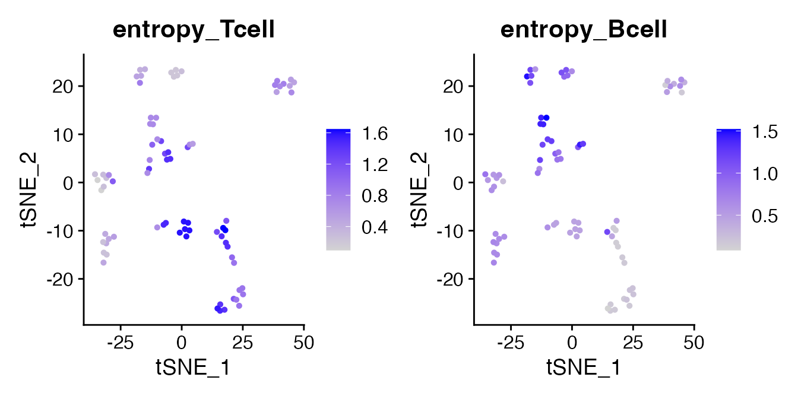

Full workflow: estimate gene expression entropy
Aryan Kamal, Charles Dussiau, Amelia Kurti, Judith Zaugg
24 July 2026
workflow.RmdThis vignette demonstrates a complete example of how to use the
Entropy package to compute entropy values for cells in a
Seurat object.
Load libraries and data
## Loading required package: SeuratObject## Loading required package: sp## 'SeuratObject' was built under R 4.6.0 but the current version is
## 4.6.1; it is recomended that you reinstall 'SeuratObject' as the ABI
## for R may have changed##
## Attaching package: 'SeuratObject'## The following objects are masked from 'package:base':
##
## intersect, t
data("pbmc_small")
DefaultAssay(pbmc_small) <- "RNA"Run entropy in counts mode
result_counts <- run_entropy(
seu = pbmc_small,
assay = "RNA",
neighbors = NULL,
neighbors_method = "auto",
output_path = NULL,
add_assay = TRUE,
mode = "counts"
)## INFO [2026-07-24 16:11:02] Assay 'RNA' found and set as default assay.## INFO [2026-07-24 16:11:02] Starting entropy estimation for assay: RNA## INFO [2026-07-24 16:11:02] Assay 'RNA' contains 80 cells and 230 features## INFO [2026-07-24 16:11:02] Reduction 'pca_RNA' not found. Running PCA on assay 'RNA'.## Warning in svd.function(A = t(x = object), nv = npcs, ...): You're computing
## too large a percentage of total singular values, use a standard svd instead.## Warning in svd.function(A = t(x = object), nv = npcs, ...): did not
## converge--results might be invalid!; try increasing work or maxit## WARN [2026-07-24 16:11:02] Requested dims up to 20 but 'pca_RNA' has 19. Capping.## INFO [2026-07-24 16:11:02] No neighbors provided. Computing neighbors using assay 'RNA'.## INFO [2026-07-24 16:11:02] Reading the precomputed table (counts mode)## INFO [2026-07-24 16:11:06] Entropy matrix added to Seurat object as 'RNA_entropy'.## INFO [2026-07-24 16:11:06] Mean entropy added to metadata column 'entropy_mean_RNA'.Inspect entropy assay
result_counts[["RNA_entropy"]]## Assay data with 230 features for 80 cells
## First 10 features:
## MS4A1, CD79B, CD79A, HLA-DRA, TCL1A, HLA-DQB1, HVCN1, HLA-DMB, LTB,
## LINC00926Visualize entropy distribution
means_counts <- colMeans(GetAssayData(result_counts[["RNA_entropy"]], layer = "counts"))
hist(
means_counts,
main = "Counts entropy distribution",
xlab = "Mean entropy",
col = "steelblue"
)
Run entropy in binary mode
Binary mode binarizes the count matrix (counts > 0)
and computes Shannon entropy.
result_binary <- run_entropy(
seu = pbmc_small,
assay = "RNA",
neighbors = NULL,
neighbors_method = "auto",
output_path = NULL,
add_assay = FALSE,
mode = "binary"
)## INFO [2026-07-24 16:11:06] Assay 'RNA' found and set as default assay.## INFO [2026-07-24 16:11:06] Starting entropy estimation for assay: RNA## INFO [2026-07-24 16:11:06] Assay 'RNA' contains 80 cells and 230 features## INFO [2026-07-24 16:11:06] Reduction 'pca_RNA' not found. Running PCA on assay 'RNA'.## Warning in svd.function(A = t(x = object), nv = npcs, ...): You're computing
## too large a percentage of total singular values, use a standard svd instead.## Warning in svd.function(A = t(x = object), nv = npcs, ...): did not
## converge--results might be invalid!; try increasing work or maxit## WARN [2026-07-24 16:11:06] Requested dims up to 20 but 'pca_RNA' has 19. Capping.## INFO [2026-07-24 16:11:06] No neighbors provided. Computing neighbors using assay 'RNA'.## INFO [2026-07-24 16:11:07] Binarizing matrix (counts > 0) for binary entropy.## INFO [2026-07-24 16:11:07] Reading the binary entropy lookup (binary mode)Inspect binary entropy output
head(result_binary)## means
## ATGCCAGAACGACT 0.5175296
## CATGGCCTGTGCAT 0.5561813
## GAACCTGATGAACC 0.5924243
## TGACTGGATTCTCA 0.5081023
## AGTCAGACTGCACA 0.5175296
## TCTGATACACGTGT 0.5175296Visualize binary entropy distribution
hist(
result_binary[[1]],
main = "Binary entropy distribution",
xlab = "Mean entropy",
col = "darkorange"
)
Run entropy restricted within groups
The restrict_by argument restricts each cell’s neighbors
to cells sharing the same value in a metadata column, so entropy is
computed within groups rather than across them. Here we use the
groups column of pbmc_small.
result_restricted <- run_entropy(
seu = pbmc_small,
assay = "RNA",
neighbors_method = "auto",
add_assay = FALSE,
mode = "counts",
restrict_by = "groups"
)## INFO [2026-07-24 16:11:07] Assay 'RNA' found and set as default assay.## INFO [2026-07-24 16:11:07] Starting entropy estimation for assay: RNA## INFO [2026-07-24 16:11:07] Assay 'RNA' contains 80 cells and 230 features## INFO [2026-07-24 16:11:07] Neighbors will be restricted within groups defined by metadata column 'groups'.## INFO [2026-07-24 16:11:07] Reduction 'pca_RNA' not found. Running PCA on assay 'RNA'.## Warning in svd.function(A = t(x = object), nv = npcs, ...): You're computing
## too large a percentage of total singular values, use a standard svd instead.## Warning in svd.function(A = t(x = object), nv = npcs, ...): did not
## converge--results might be invalid!; try increasing work or maxit## WARN [2026-07-24 16:11:07] Requested dims up to 20 but 'pca_RNA' has 19. Capping.## INFO [2026-07-24 16:11:07] No neighbors provided. Computing neighbors using assay 'RNA'.## INFO [2026-07-24 16:11:07] Recomputing neighbors within each group of 'groups'.## INFO [2026-07-24 16:11:07] Within-group neighbors: mean 15.0 per cell; 0 cells with 0 neighbors.## INFO [2026-07-24 16:11:07] Reading the precomputed table (counts mode)Compare unrestricted vs restricted
means_restricted <- result_restricted[[1]]
par(mfrow = c(1, 2))
hist(means_counts, main = "Unrestricted", xlab = "Mean entropy",
col = "steelblue", xlim = range(c(means_counts, means_restricted)))
hist(means_restricted, main = "Restricted within groups", xlab = "Mean entropy",
col = "seagreen", xlim = range(c(means_counts, means_restricted)))
Restricting neighbors to within-group cells changes each cell’s
neighborhood composition, which shifts the entropy estimates. On a small
demonstration dataset like pbmc_small the magnitude of the
difference is not biologically meaningful — the purpose here is to show
the effect of the restrict_by argument on the computation,
not to interpret the values.
Score gene sets with add_entropy_score
Once entropy has been computed and stored as an assay
(add_assay = TRUE), the add_entropy_score()
function can quickly summarise the mean entropy of one or more gene sets
and add each as a metadata column. It does not recompute anything, it
simply averages the already stored per-gene entropy, so it is a fast way
to score many pathways or regulons at once.
We pass a named list of gene sets. Each name becomes a metadata
column prefixed with entropy_ (for example
Tcell becomes entropy_Tcell). Here we use
force_drop = TRUE so that any gene not present in the
entropy assay is dropped with a warning rather than raising an
error.
gene_sets <- list(
Tcell = c("CD3D", "CD3E", "CD8A", "IL7R"),
Bcell = c("CD79A", "CD79B", "MS4A1")
)
result_counts <- add_entropy_score(
seu = result_counts,
entropy_assay = "RNA_entropy",
features_list = gene_sets,
force_drop = TRUE
)## INFO [2026-07-24 16:11:11] Added metadata column 'entropy_Tcell' (mean entropy of 4 features).## INFO [2026-07-24 16:11:11] Added metadata column 'entropy_Bcell' (mean entropy of 3 features).## entropy_Tcell entropy_Bcell
## ATGCCAGAACGACT 1.599212 0.4655916
## CATGGCCTGTGCAT 1.489129 0.4655916
## GAACCTGATGAACC 1.108331 0.2464443
## TGACTGGATTCTCA 1.444244 0.4445280
## AGTCAGACTGCACA 1.599212 0.4655916
## TCTGATACACGTGT 1.599212 0.4655916Visualise gene set entropy
Because the scores are stored in the metadata, they can be visualised
directly with Seurat’s FeaturePlot on any existing
reduction. pbmc_small ships with a t-SNE embedding, so we
use that.
FeaturePlot(
result_counts,
features = c("entropy_Tcell", "entropy_Bcell"),
reduction = "tsne"
)
Each cell is coloured by the mean entropy of the corresponding gene set, giving a per-cell view of how variable those genes are within each cell’s neighbourhood. On a small demonstration dataset the values are mainly illustrative, but on a full dataset this is a quick way to compare the entropy of different pathways or regulons across cell populations.